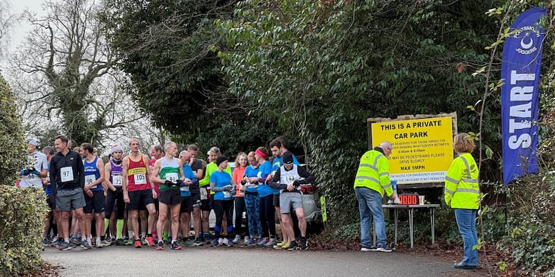
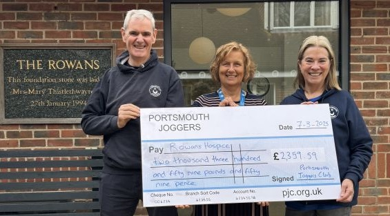
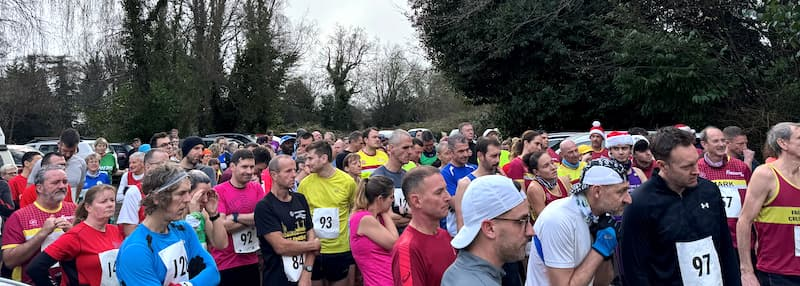

Pub2Pub
The Pub2Pub is our annual charity run, held between Christmas and New Year, making it the perfect way to run off those mince pies! Established in 1988, the Pub2Pub is a hallmark staple of our running calendar here at PJC and has a reputation amongst the local running community for being a tough but enjoyable way to close the year. The route has changed over the years, and it is no longer technically from pub to pub, however the name has stuck, and who are we to mess with tradition!
The run is approximately 10 km along open country roads, before going off-road up towards Windmill Hill, and looping back to the start in Horndean. There is also the option of completing a 5 km walk, if running isn't for you. 100% of the profits from this run go to the Rowans Hospice.
2025 Race Information
- Race date
- Saturday, 27th December 2025
- Entries open
- To Be Announced
- Latest updates
- To Be Announced
Pub2Pub 2024
The 2024 Pub2Pub took place on Friday 27th December at 10:30 a.m. and saw just over 150 people participate in the 10 km run with a smaller number of people choosing the 5 km walking route.

The start of the Pub2Pub 2024.
We are delighted to have raised £2,359.59 for Rowans Hospice from the Portsmouth Joggers Club Pub2Pub event.

Tony Quinn and Sue Clarke presenting a cheque to Rowans Hospice on behalf of Portsmouth Joggers Club.
This amazing amount is thanks to the runners and walkers from Portsmouth and beyond who joined us at the event and all the wonderful helpers and marshals without whom this event could not happen, Blendworth Church Centre who let us use their church hall every year as our race HQ, South East Hampshire Raynet who provide communication cover for the event, and St Johns Ambulance who provide first aid cover.

Pub2Pub 2024 participants assemble for the start.
We're incredibly grateful to the local businesses - Alexandra Sports, Bransbury Park Butchers, Pure Gym, Wightlink, and Portsmouth Gin Distillery, as well as the amazing PJC members and other local runners who donated prizes for the raffle.